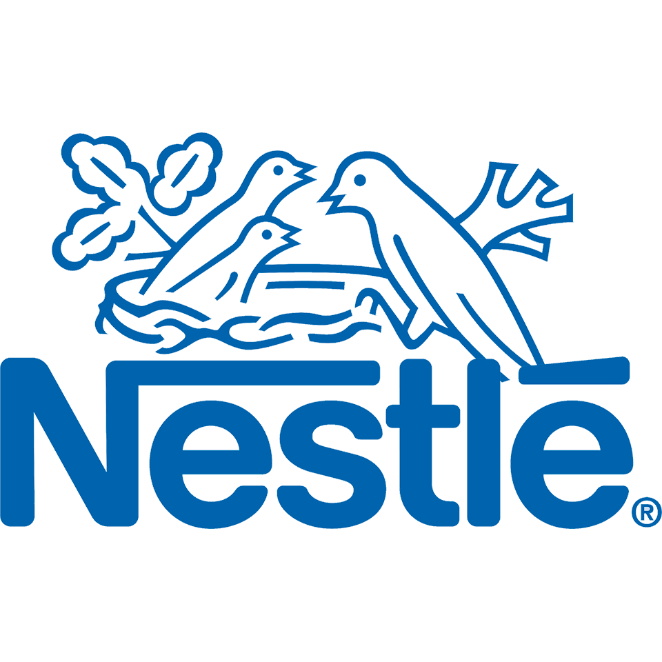
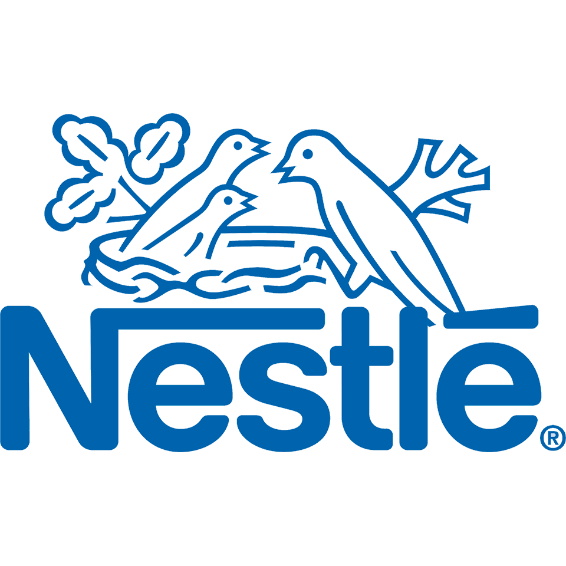

In Papua, access to education remains one of the biggest challenges faced by children — especially in rural, remote, and indigenous communities. Many villages lack proper schools, trained teachers, and essential learning materials. For some children, the nearest school is hours away by foot, across forests, rivers, or mountains.
Others have never stepped into a classroom at all. We are committed to breaking these barriers and ensuring every child, regardless of location, gender, or economic background has the chance to learn. Our Providing Access to Education program focuses on:


Establishing Learning Centers
In many remote villages across Papua, formal schools simply do not exist. Some children live in areas where the nearest school is hours or even days away. In these cases, the lack of physical access to education becomes the first and most critical barrier. To bridge this gap, Papuan Educational Development (PED) works directly with local communities to establish Learning Centres—community-based, flexible learning spaces designed to bring education directly to the heart of the village.
Educational Equity & Inclusion
In Papua, education is not equally accessible to all children. Factors like gender, disability, economic hardship, remote location, and cultural identity create deep educational gaps. Many girls drop out early due to cultural expectations. Children with disabilities often have no access to specialized support. Indigenous children who speak local languages at home face language barriers in the classroom.
Funding For Infrastructure & Facilities
In many parts of Papua, the lack of proper school buildings and basic facilities is one of the biggest barriers to quality education. Children study under leaking roofs, in classrooms without desks, books, or even proper floors. Some villages have no schools at all, forcing children to walk for hours through forests or across rivers, often arriving too tired to focus on learning.
Through the Funding for Infrastructure & Facilities program, Papuan Children’s Education (PED) works to build, renovate, and equip schools and learning centers in underserved and remote communities. By investing in safe, comfortable, and inspiring learning environments, PED ensures children have a proper place to learn, grow, and dream.
OUR SPONSORS AND PARTNERS


 
